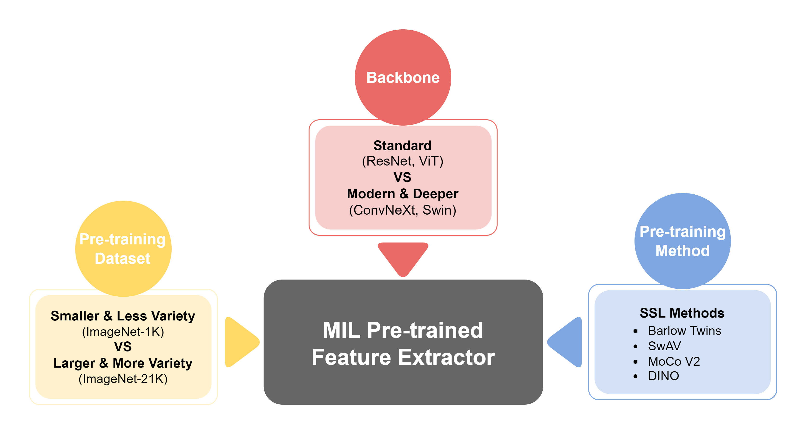

Bryan Wong
About Me
I am currently a Ph.D. candidate in Data Science at KAIST, advised by Prof. Mun Yong Yi, and have been fortunate to collaborate with and be mentored by Dr. Huazhu Fu at A*STAR. Before beginning my Ph.D., I received my M.S. in Data Science from KAIST in 2023 and completed my B.S. in Computer Science at NTUST in 2021, graduating one year early.
My current research focuses on multimodal AI for gigapixel medical images, advancing how vision–language models (VLMs) and multimodal LLMs understand large, complex visual data.
News
- [Jan. 2026] Outstanding Award Recipient (Best Runner-up) by GSDS, KAIST.
- [Sep. 2025] HiVE-MIL accepted to NeurIPS 2025!
- [Aug. 2025] LOKT accepted to EMNLP (Findings) 2025.
- [Jun. 2025] MicroMIL accepted to MICCAI 2025.
Publications
-
 EMNLP
EMNLP
-
 ISBI
 NeurIPS
NeurIPS
 CIKM
CIKM
 MICCAI
MICCAI
Preprints
-
 Preprint
Preprint
Academic Services
- Reviewer: MICCAI 2025
- Student Volunteer: MICCAI 2025
Powered by Jekyll and Minimal Light theme.